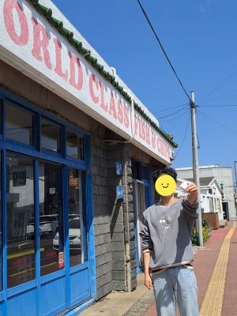
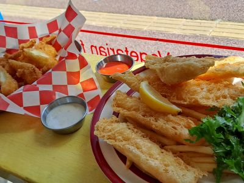

Willala 윌라라
 This is the restaurant we liked the most in Jeju. The chef fell in love with fish and chips when he was staying in Australia. The fish is very fresh, and it is crispy.
This is the restaurant we liked the most in Jeju. The chef fell in love with fish and chips when he was staying in Australia. The fish is very fresh, and it is crispy.